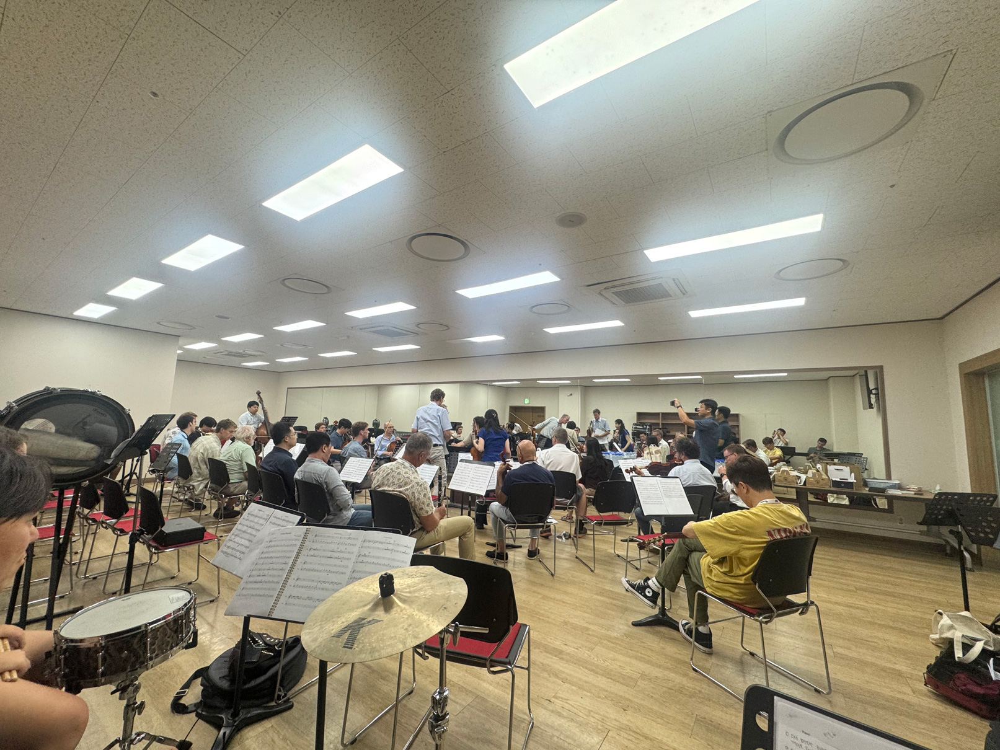
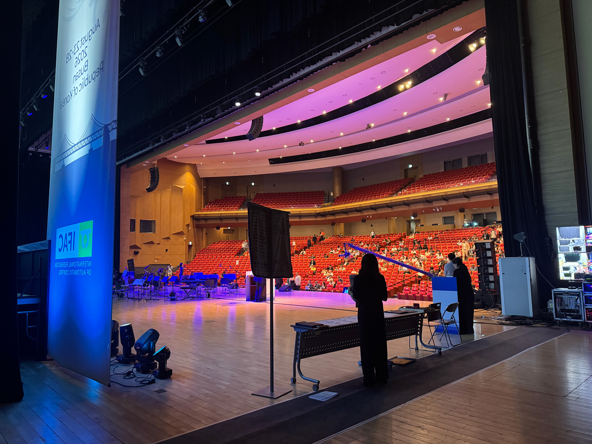
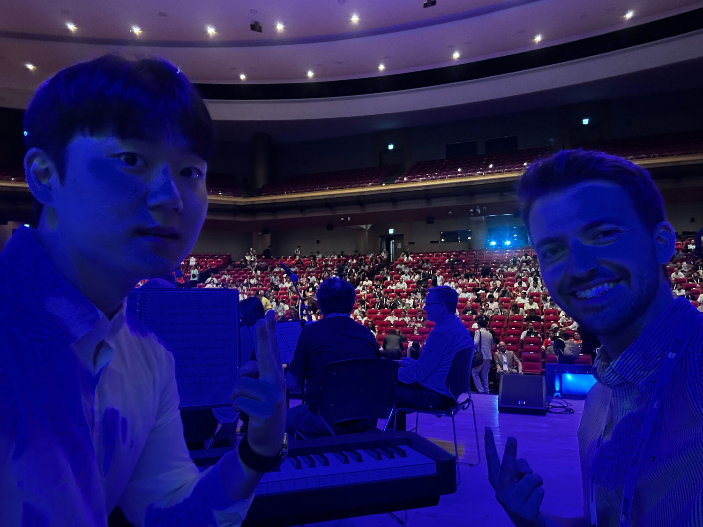
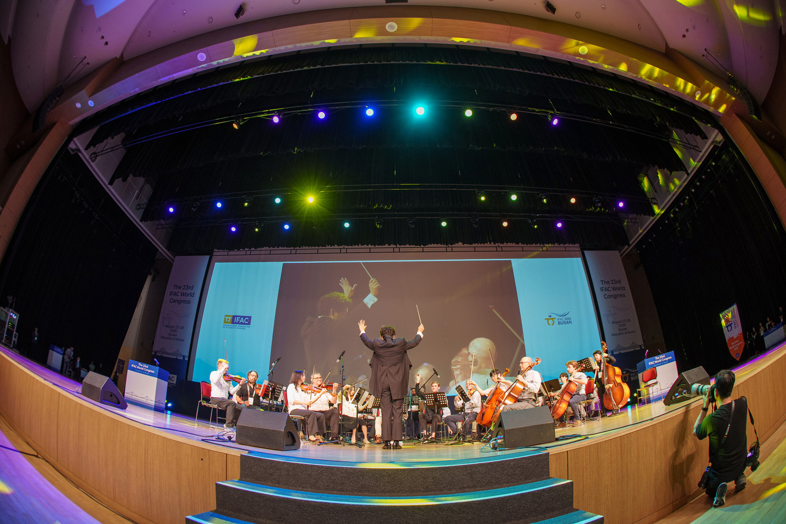
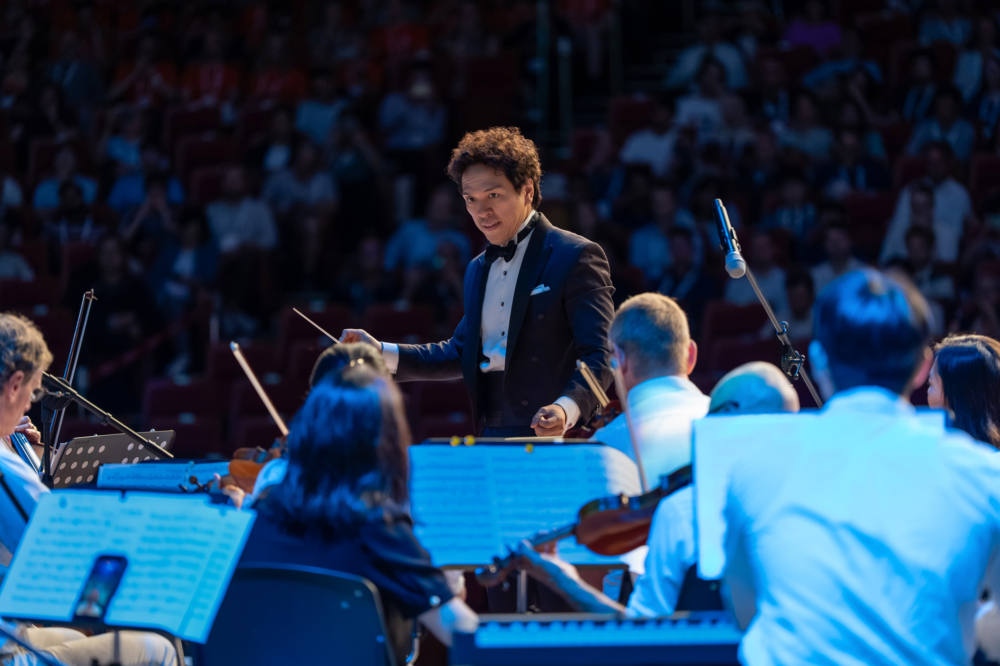
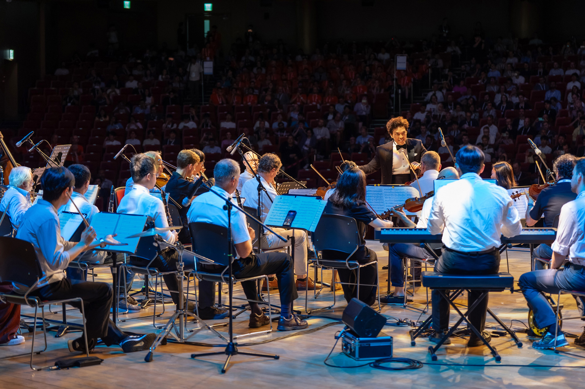
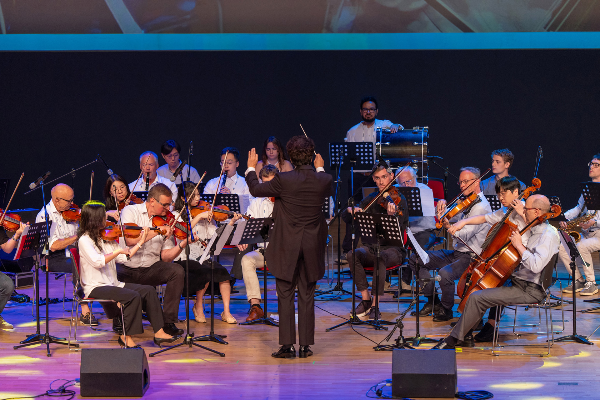

[2026/8/28] IFAC 2026 World Congress — IFAC Control Orchestra 참여
작성자: 김래헌
무대 위의 제어공학자들, IFAC Control Orchestra!
IFAC 2026 World Congress에서 열린 IFAC Control Orchestra 공연에 Principal Piano로 참여하게 되었습니다. IFAC Control Orchestra는 전 세계 제어공학 연구자들이 모여 구성한 오케스트라로, 이번 공연은 8월 28일 부산 BEXCO Audiotorium에서 진행되었습니다.
공연 3일 전인 8월 25일 화요일 저녁부터 매일매일 리허설이 있었습니다. 각국에서 온 연주자들과 처음 맞춰보는 자리였지만, 백윤학 지휘자님께서 각각의 파트를 짚어주시면서 서서히 호흡을 맞춰나가기 시작했습니다. 오케스트라가 처음이어서 이렇게 많은 사람들과 함께 똑같은 박자로 곡을 연주하는 것이 정말 어려웠지만, 모두가 박자에 맞춰서 연주를 할 때 정말 듣기 좋다는 생각이 많이 들었습니다.

공연 당일, 오후 2시에 최종 리허설을 진행하면서 무대 사운드를 점검하기 시작했습니다. 각 파트의 악기들이 관객석에서 잘 들리는지 확인해보면서, 마지막으로 호흡을 맞춰보는 시간을 가졌습니다. 생각보다 공연장이 훨씬 크고, 사람들이 많이 오고 있었어서 정말 긴장했던 것 같습니다.

오후 4시가 조금 지나서 본 공연이 시작되었습니다. 곡 순서는 Ariang Rhapsody, You've got a friend with me, Golden 순서로 진행되었습니다. 첫번째와 마지막 곡은 제가 연주하였고, 2번째 곡은 Simon이 연주하였습니다. 서로의 순서때 피아노를 양보해주고 악보를 넘겨주면서 도와주었습니다.

2번째 곡을 연주해준 Simon과 공연 시작 직전에 같이 사진 한 장을 찍었었습니다.
사실 국제 제어 학회에서 피아노를 연주하게 될 줄은 정말 몰랐었는데, 다양한 나라에서 온 연구자분들과 유명한 백윤학 지휘자님까지 같이 만나서 연주를 하게 되는 건 정말 잊지 못할 경험이었습니다. 다음 IFAC World Congress는 2029년에 네덜란드 암스테르담에서 열린다고 하는데, 그때도 성공적인 Control Orchestra를 기대하겠습니다!
추가적인 영상과 사진
교수님께서 제공해주신 영상과 사진입니다.




Youtube Intro 
참가자:
김래헌 - 참여 파트 Principal Piano / 연주곡 Arirang Rhapsody, Golden (K-pop demon hunters)